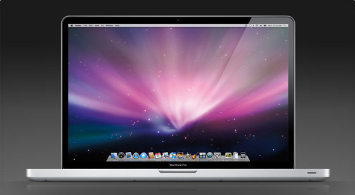

Эволюция ноутбуков Apple
Macintosh Portable - 1989
История портативных компьютеров Apple насчитывает уже 25 лет – PowerBook, iBook, а теперь,
как венец творения, MacBook. Правда, все началось несколько раньше, ведь еще в 1989 году
компания выпустила Mac Portable, о котором предпочла бы лучше забыть.
Купертиновцы
считают началом истории «яблочных» лэптопов выход PowerBook в 1991 году, и до появления MacBook
устройства прошли 7 ключевых этапов эволюции.
Наверх ⇧
PowerBook 100 - 1991
PowerBook(и, конечно, Mac Portable тоже) был оснащен оригинальным процессором Motorola
680×0. Устройство произвело настоящую революцию, именно поэтому в ходе недавнего мероприятия
Apple упомянула 25-ю годовщину его выхода.
Наверх ⇧
PowerBook Duo - 1992

Одним из наиболее интересных «Маков» за всю их историю является PowerBook Duo.
Устройство весило всего 1,8 кг – нечто невероятное, как для 1992 года, и представляло собой
единственный удачный эксперимент Apple по созданию лэптопа с док-станцией. Duo Dock вставлялась в
устройство, как кассета в видеомагнитофон, и подключалась к внешнему монитору, картам расширения,
видеокартам и пр.
Несмотря на то, что PowerBook Duo не похож ни на один когда-либо выпущенный лэптоп от Apple, его
преемниками можно считать MacBook Air и MacBook с дисплеем Retina и одним
портом.
Наверх ⇧
PowerBook 180c - 1993
7 июня 1993 года: Apple выпускает ноутбук PowerBook 180c, позаботившись о множестве
обновлений,
включая 256-цветный экран, компактный дизайн корпуса и хорошую по тем временам вычислительную
мощность.
Следует отметить, что PowerBook 180c был не первым цветным ноутбуком, но первым, имевшим дисплей с
активной матрицей, обеспечивающей высококачественное красочное отображение картинки на экране при
любом угле обзора.
PowerBook 180c был новой моделью и имел впечатляющие характеристики. В корпусе компактного дизайна
поместился процессор Motorola 68030 на 33 МГц и сопроцессор 6882, 4 Мб ОЗУ с возможностью расширения
до 14 Мб.
В PowerBook присутствует множество портов: разъем для Apple Desktop Bus, два порта
RS-422,
SCSI, разъемы для микрофона, динамика и отсек для модема. Ноутбук был востребованным и удобным в
использовании.
Наиболее существенным редизайном устройства стала серия PowerBook 500 с кодовым
названием Blackbird.
Наверх ⇧
PowerBook 540c - 1994
Следующая эра сделала PowerBook по-настоящему мощными. С добавлением процессора PowerPC в названиях
моделей трехзначные числа сменились четырехзначными. Apple выпустила обновленную версию PowerBook
500 – PowerBook 5300, аккумуляторы которых стали самовозгораться.
Одним из наиболее интересных лэптопов того времени был преемник Duo – PowerBook 2400c
. Устройство
весило почти 2 кг, а купить его было практически невозможно.
Несмотря на то, что продажи лэптопа оставляли желать лучшего, он пользовался большой популярностью в
Японии. После прекращения выпуска PowerBook 2400c в США Apple выпустила обновленную модель
устройства эксклюзивно для японского рынка.
Наверх ⇧
PowerBook 1400 - 1996
eMate 300 - 1997
PowerBook G3 - 1997
PowerBook получил процессор PowerPC G3 примерно в то же время, когда Стив Джобс
вернулся в Apple.
Первый G3 PowerBook представлял собой все тот же PowerBook 3400c, но с другим процессором, а вот
черный пластиковый PowerBook G3 Wall Street стал настоящим монстром.
Этот loptop выпустила уже совсем другая Apple. Первым сигналом изменений в компании стало появление
на крышке ноутбука большого белого логотипа. Кроме того, устройство обзавелось резиновым корпусом с
закругленными краями. Этот дизайн использовался в трех поколениях гаджетов в добавок к FireWire.
Первым «яблочным» ноутбуком, по-настоящему ориентированным на пользователя, стал iBook.
Наверх ⇧
iBook - 1999

Устройство работало на базе процессора G3, а его корпус был изготовлен из полупрозрачного пластика,
наподобие iMac.
Наверх ⇧
Book G3 Dual USB - 2001
PowerBook G4 - 2001
В настоящее время при упоминании ноутбука от Apple на ум приходит серебристое устройство с логотипом
компании. Это эра, с которой все началось. Первой попыткой купертиновцев выпустить мощный
серебристый лэптоп стал Titanium PowerBook G4.
На то время это была умопомрачительная машина толщиной всего 2,5 см. Правда, титановый корпус
устройства оказался хотя и легким, но весьма ломким, а краска плохо держалась на металле.
Новые
Titanium PowerBook G4 выглядели потрясающе, однако со временем облезлый поцарапанный корпус
утрачивал свою привлекательность.
Наверх ⇧
iBook G4 - 2004

С тех пор для производства лэптопов Apple решила использовать анодированный алюминий, что и делает
по сей день. Выпущенные в 2003 году алюминиевые PowerBook G4 были несколько громоздкими, однако до
сих пор считаются одними из современных «маков».
Наверх ⇧
PowerBook G4 - Aluminum - 2003
Однажды Стиву Джобсу надоело добавлять к названию каждой новой профессиональной модели Mac слово
«power». А тут еще Apple отказалась от процессоров PowerPC, и пришло время распрощаться с
названием «PowerBook». В 2006 году закончилась 15-летняя история PowerBook, равно как и
более нового iBook, и на смену им пришли MacBook и MacBook Pro, ознаменовав начало эры Intel.
Несмотря на смену названия и новый процессор, внешне новые устройства практически не отличались от
своих предшественников. Поликарбонатный iBook, который являлся лишь пластиковой версией стандартного
лэптопа Mac, теперь стал называться MacBook.
Наверх ⇧
MacBook - 2006
MacBook Pro - 2006
MacBook Air - 2008
Знаменательный поворот в истории «яблочных» ноутбуков произошел в 2008 году, когда состоялся релиз
MacBook Air. Устройство оказалось настоящей диковинкой, невероятно легкой и тонкой.
Спустя два года Apple выпустила 11- и 13-дюймовую версии MacBook Air. Более новые модели получили
мощный процессор i7 и SSD-диск.
Наверх ⇧
MacBook - 2008
Современные MacBook и MacBook Pro без всяких сомнений принадлежат к новой эре, которая только-только
началась. Поддержка стандарта USB-C, сенсорная панель и новые цвета – все это сигнализирует о начале
совсем новой вехи в истории ноутбуков от Apple.
Наверх ⇧
MacBook Pro - 2008

MacBook Pro - 2020 m1
Источник: yablyk.com 2019